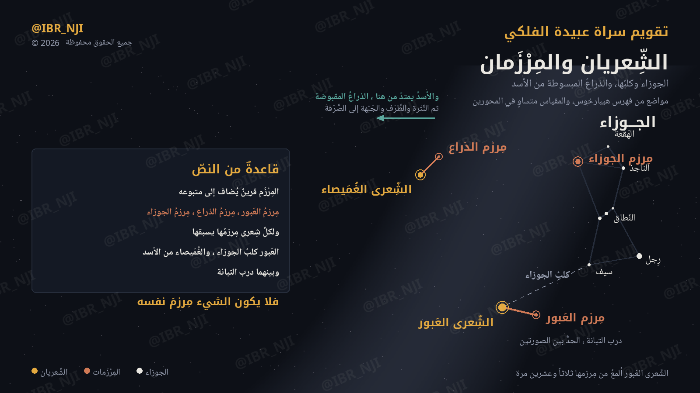
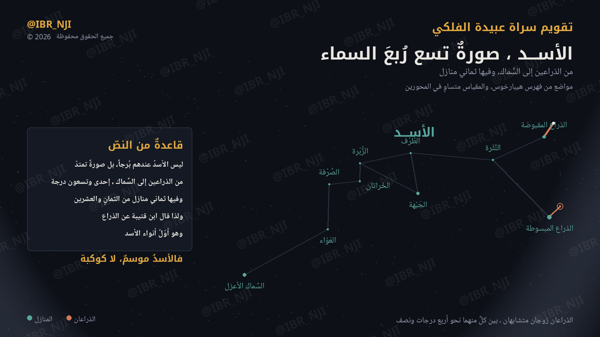

ثمانيةُ نجومٍ يحسبها محرّكنا لخط عرض سراة عبيدة: كم يعلو كلٌّ منها في سمائنا، ومتى يمكن أن يُرى أولَ مرة في السنة. وهذه بوابةٌ مختصرة — ومن له صفحةٌ ففيها تفصيلُه.
أعلى ارتفاع أقصى ما يبلغه النجم فوق أفقنا حين يعبر خطَّ الزوال — سقفٌ لا يتجاوزه من هذا الموقع مهما طالت السنة. وأول ظهور ممكن أولُ صباحٍ في سنة 2026 يمكن أن يُرى فيه النجم قبل الفجر بعد غيابه في ضوء الشمس. والعتبةُ درجةٌ واحدة فوق الأفق، إلا نجماً يبتلعه الخفوتُ دونها فيُنتظر حتى يعلو عنها — ولذلك يُذكر مع كل تاريخٍ الارتفاعُ الذي تحقّق عنده، فليست الثمانيةُ على عتبةٍ واحدة.
| النجم | القدر | الميل | أعلى ارتفاع | أول ظهور ممكن 2026 |
|---|---|---|---|---|
سهيل
Canopusالتفصيل ← |
-0.62 | -52.70° | 19.2° | 9 أغسطس
على 1.10° |
الشعرى اليمانية
Sirius |
-1.44 | -16.71° | 55.1° | 26 يوليو
على 1.23° |
المرزم
Mirzam |
+1.98 | -17.96° | 53.9° | 22 يوليو
على 1.96°ودونه يبتلعه الخفوت |
الثريا
Alcyone |
+2.85 | +24.11° | 83.9° | 5 يونيو
على 5.20°ودونه يبتلعه الخفوت |
الدبران
Aldebaran |
+0.87 | +16.51° | 88.5° | 16 يونيو
على 1.87° |
الشولة
Shaula |
+1.62 | -37.10° | 34.8° | 2 يناير
على 1.65°ودونه يبتلعه الخفوت |
السماك الرامح
Arcturus |
-0.05 | +19.19° | 89.1° | 30 أكتوبر
على 1.32° |
الجبهة
Regulusالتفصيل ← |
+1.36 | +11.97° | 83.7° | 3 سبتمبر
على 1.40°ودونه يبتلعه الخفوت |
المعيار: الشمس على عمق تسع درجات، وارتفاع النجم حقيقيّ لا ظاهرياً، وأفقُ المشرق مستوٍ مكشوف. والقدرُ أصغر عدداً كلّما كان النجم أسطع.
وليست هذه تواريخَ المنازل. هذا ما يقوله الحساب لهذا الموقع وحده، وقد يسبق التقويمَ المتداول بأيام أو بأسبوعين — وسراةُ عبيدة جنوبيّةٌ مرتفعة، والجنوبُ يُبكِّر. وتواريخُ دخول المنازل المتداولة لم تُنشر هنا لأنها منقولةٌ لم تُقابَل بمطبوعة، وما لم يُتحقق منه لا يُنشر.
صورتان كما وصفهما ابن قتيبة الدِّينَوَريّ في «الأنواء»: مواضع نجومهما محسوبة، ودرب التبانة من الإحداثي المجرّي، والمقياس متساوٍ في المحورين فالصورة على هيئتها الحقيقية.

الجوزاء وكلبها، والذراع المبسوطة من الأسد. المِرْزَم وصفُ قرينٍ يُضاف إلى متبوعه — فلكلّ شِعرى مِرزمُها يسبقها، ولا يكون الشيء مِرزمَ نفسه.

ليس بُرجاً عندهم، بل صورة تمتدّ من الذراعين إلى السِّماك، إحدى وتسعون درجة، وفيها ثماني منازل من الثماني والعشرين.